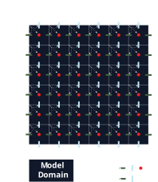
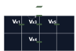

Pseudo Transient Stokes Solvers
Numerical Justification
The standard incompressible steady-state mass and momentum conservation equations (elliptical) form a saddle point problem with pressure acting as a Lagrangian multiplier. Such systems have the following properties:
- Indefinite - The matrix eignevalues are +ve and -ve mixed, with no simple minimum,
- The system necessitates 'LBB' or 'Inf-Sup' criterion,
- Poor conditioning - Significant difference in magnitudes between velocity and pressure.
The pseudo-transient approach introduces artificial time derivatives to these conservation equations which embeds regularisation terms into the system. This then provides a pressure block diagonal dominance, suppressing unphysical behaviours and significantly improves the condition number.
Physics Formulation
We begin with the standard steady-state conservation equations for incompressibile and inertialess flow:
Conservation of mass,
\[\nabla\cdot\underline{\mathbf{v}}=0\]
Conservation of momentum,
\[-\nabla P + \nabla\cdot\underline{\mathbf{\sigma'}} = -\rho g\underline{\mathbf{e}}_y,\]
With Newton's consitutive law:
\[-\nabla P + \nabla\cdot(2\underline{\mathbf{\dot{\varepsilon}}}'\eta) = -\rho g\underline{\mathbf{e}}_y.\]
In the pseudo-transient approach, we add artificial time derivatives, $\partial\tau$, that recover the original conservation equations as they tend to zero. This transforms the equations from elliptical to parabolic, through a new equation of state (EOS) compressibility term, $\beta\frac{\partial P}{\partial\tau}$, in the conservation of mass, and an inertial term, $\rho^*\frac{\partial\underline{\mathbf{v}}}{\partial\tau}$, in the conservation of momentum. Here $\beta$ and $\rho^*$ are the artifical (non-physical) compressibility and density respectively.
Conservation of mass,
\[\beta\frac{\partial P}{\partial\tau}+\nabla\cdot\underline{\mathbf{v}}=0\]
Conservation of momentum,
\[-\nabla P + \nabla\cdot(2\underline{\mathbf{\dot{\varepsilon}}}'\eta) - \rho^*\frac{\partial\underline{\mathbf{v}}}{\partial\tau} = -\rho g\underline{\mathbf{e}}_y.\]
Assuming incompressibility, $\underline{\mathbf{\dot{\varepsilon}}}' = \underline{\mathbf{\dot{\varepsilon}}}$,
\[-\nabla P + \nabla\cdot((\nabla\mathbf{v} + (\nabla\mathbf{v})^T)\eta) - \rho^*\frac{\partial\underline{\mathbf{v}}}{\partial\tau} = -\rho g\underline{\mathbf{e}}_y,\]
For constant $\eta$,
\[\frac{\partial\underline{\mathbf{v}}}{\partial\tau} = \frac{1}{\rho^*}( -\nabla P + \eta\nabla^2\mathbf{v} + \eta\nabla(\nabla\cdot\mathbf{v}) +\rho g\underline{\mathbf{e}}_y),\]
We may then derive hyperbolic equations which are governed by the CFL stability condition, such that the pseudo-time step ($\Delta\tau$) is directly proportional to the spatial resolution ($\Delta x$). This is advantageous as a typical parabolic systems has $\Delta t \propto (\Delta x)^2$, meaning a doubling in the resolution requires quartering the time step. This hyperbolic equation can be found by taking the pseudo-time derivative of the continuity equation and substituting the conservation of momentum equation,
$\frac{\partial}{\partial\tau}$(Conservation of mass),
\[\frac{\partial^2 P}{\partial\tau^2} = -\frac{1}{\beta}\nabla\cdot(\frac{\partial \underline{\mathbf{v}}}{\partial\tau}),\]
Substitute conservation of momentum,
\[\frac{\partial^2 P}{\partial\tau^2} = -\frac{1}{\beta}\nabla\cdot(\frac{1}{\rho^*}( -\nabla P + \eta\nabla^2\mathbf{v} + \eta\nabla(\nabla\cdot\mathbf{v}) +\rho g\underline{\mathbf{e}}_y) ),\]
Expanding,
\[\frac{\partial^2 P}{\partial\tau^2} = \underbrace{\frac{1}{\beta\rho^*}\nabla^2P}_{\text{Classic Wave Equation}} - \underbrace{\frac{1}{\beta\rho^*}\nabla\cdot(\rho g\underline{\mathbf{e}}_y)}_{\text{Buoyancy Source}} - \underbrace{\frac{\eta}{\beta\rho^*} 2\nabla^2(\nabla\cdot\mathbf{v})}_{\text{Viscous Damping}} ,\]
Substituting compressibility,
\[\frac{\partial^2 P}{\partial\tau^2} = \underbrace{\frac{1}{\beta\rho^*}\nabla^2P}_{\text{Classic Wave Equation}} - \underbrace{\frac{1}{\beta\rho^*}\nabla\cdot(\rho g\underline{\mathbf{e}}_y)}_{\text{Buoyancy Source}} - \underbrace{\frac{\eta}{\beta\rho^*} 2\nabla^2(-\beta\frac{\partial P}{\partial\tau})}_{\text{Viscous Damping}} ,\]
Damped Wave Equation,
\[\frac{\partial^2 P}{\partial\tau^2} = \underbrace{\frac{1}{\beta\rho^*}\nabla^2P}_{\text{Classic Wave Equation}} +\underbrace{\frac{\eta}{\rho^*} 2\nabla^2(\frac{\partial P}{\partial\tau})}_{\text{Viscous Damping}} ,\]
By combining these conservation equations we form a hyperbolic equation, with a characteristic wave speed of $c^2 = \frac{1}{\beta\cdot\rho^*}$.
Dispersion Analysis
A critical feature of the pseudo-transient method is finding terms for $\beta$, $\rho^*$ and $\Delta\tau$, which both stabilises the system and provides rapid numerical convergence.
Analysing the system, we may substitute a Fourier ansatz, $P(\underline{\mathbf{x}},\tau) = \hat{P}(\tau)e^{i\underline{\mathbf{k}}\cdot\underline{\mathbf{x}}}$, into the damped wave equation,
\[\hat{P}(\tau)'' + \frac{2\eta\underline{\mathbf{k}}^2}{\rho^*}\hat{P}(\tau)' + \frac{\underline{\mathbf{k}}^2}{\beta\rho^*}\hat{P}(\tau) = 0,\]
for $\underline{\mathbf{k}} = k_x\underline{\mathbf{i}} + k_y \underline{\mathbf{j}}$. By substituting $\hat{P}(\tau)=e^{\gamma\tau}$ into the linear homogeneous ordinary differential equation, we find root solutions of the form
\[\gamma = -\frac{\eta\underline{\mathbf{k}}^2}{\rho^*} \pm \sqrt{\frac{\eta^2\underline{\mathbf{k}}^4}{\rho^{*2}}-\frac{\underline{\mathbf{k}}^2}{\beta\rho^*}}.\]
where we seek the minimum real root solutions the exponential decay rate, $\gamma$. In the first case, critical dampening may be obtained when the discriminant, $D$, is zero,
\[D = \frac{\eta^2\underline{\mathbf{k}}^4}{\rho^{*2}}-\frac{\underline{\mathbf{k}}^2}{\beta\rho^*} = 0,\]
\[\therefore \frac{\eta^2\underline{\mathbf{k}}^2}{\rho^{*2}} = c^2,\]
substituting the wavespeed relation $c^2 = \frac{1}{\beta\cdot\rho^*}$. If $D>0$, then we obtain two roots for $\gamma$,
\[\gamma_1 = -\frac{\eta\underline{\mathbf{k}}^2}{\rho^*} + \sqrt{D},\]
\[\gamma_2 = -\frac{\eta\underline{\mathbf{k}}^2}{\rho^*} - \sqrt{D}.\]
For $D > 0$, both roots are negative and $\gamma_2 < \gamma_1$. The $\gamma_2$ mode decays faster, but a general solution contains both modes, whereby its long-time convergence is governed by the slower-decaying $\gamma_1$ mode.
Parameter Estimation
In the numerical setup, we seek parameters which will attenuate a given wave over the domain length, $L_c$, for $L_c =\operatorname{max}(Width, Height)$.
As the numerical scheme below combines explicit with semi-implicit formulations, the pseudo-timestep, $\Delta\tau$, is limited by the CFL condition,
\[c\Delta\tau = \operatorname{CFL}\frac{\Delta h}{\sqrt{n}},\]
where $n$ is the number of spatial dimensions. As such, the code choses a fixed arbitrary $c$ and then derives $\Delta\tau$ from the CFL condition,
\[\Delta\tau = \operatorname{CFL}\frac{\Delta h}{c\sqrt{n}},\]
From the Nyquist-Shannon sampling theorem, $\lambda_{min} = 2\Delta h$, we can relate the characteristic wavenumber, $k_c$, to the characteristic gridspacing, $\Delta h$ by,
\[||\underline{\mathbf{k}}|| = k_c=\frac{2\pi}{\lambda} = \frac{\pi}{\Delta h}.\]
Following the critical dampening equation,
\[\frac{\eta^2 \underline{\mathbf{k}}^2}{\rho^{*2}} = \frac{\eta^2\pi^2}{\rho^{*2}\Delta h^2} = c^2,\]
Which can be reduced when all parameters are positive to,
\[\rho^* = \frac{\eta\pi}{c\Delta h},\]
and
\[\beta = \frac{1}{\rho^*c^2}\]
Discretised Updates and Convergence
The explicit velocity update from the modified momentum equation is
\[\underline{\mathbf{v}}^{l+1} = \underline{\mathbf{v}}^{l} + \frac{\Delta\tau}{\rho^*}\left( -\nabla P^{l} + \eta\nabla^2\underline{\mathbf{v}}^{l} - \underline{\mathbf{f}}\right),\]
for the current pseudo-transient iteration, $l$. The pressure update from the modified continuity equation then uses the updated velocities from the momentum equation via
\[P^{l+1} = P^{l} - \frac{\Delta\tau}{\beta}\nabla\cdot\underline{\mathbf{v}}^{l+1}.\]
The pseudo-transient approach drives solutions to the steady-state as the pseudo timesteps tend to zero. As such, convergence is evaluated by the change in parameters across a pseudo timestep, made relative to the magnitude of the overall driving forcing $f_{max}$. These residuals are determined by,
\[r_{velocity} = \frac{\left\|\underline{\mathbf{v}}^{l+1}-\underline{\mathbf{v}}^{l}\right\|_\infty\rho^*}{\Delta\tau f_{max}},\qquad r_{pressure} = \frac{\left\|P^{l+1}-P^{l}\right\|_\infty\beta}{\Delta\tau f_{max}\Delta h},\]
where an arbitrary tolerance, $\max(10^{-6}, 1000\epsilon)$, is pre-set given a machine epsilon, $\epsilon$, of the floating point number of the system, relating the differences in precision between Float32 and Float64. The solver further provides a warning if the maximum number of iterations is reached without convergence.
See Alkhimenkov and Podladchikov (2025) for the accelerated pseudo-transient method.
Model Setup
Using the pseudo transient approach, the staggered-finite-difference formulation from the monolithic approach is modified to eliminate ghost nodes, and the requirements for global indexing are relaxed. As such, the array sizes for Vx, Vy, and P are not equal, and additional boundary vectors are deployed (see Boundary Conditions).

Boundary Conditions
The implemented staggered-finite-difference scheme affords collated boundary nodes on Vx and Vy, but not for all boundaries. As such, from boundary condition functions, the scheme implements the respective boundary conditions implicitly.
X-Stokes boundary condition layout

References
Alkhimenkov, Y. and Podladchikov, Y.Y., 2025. Accelerated pseudo-transient method for elastic, viscoelastic, and coupled hydromechanical problems with applications. Geoscientific Model Development, 18(2), pp.563-583.